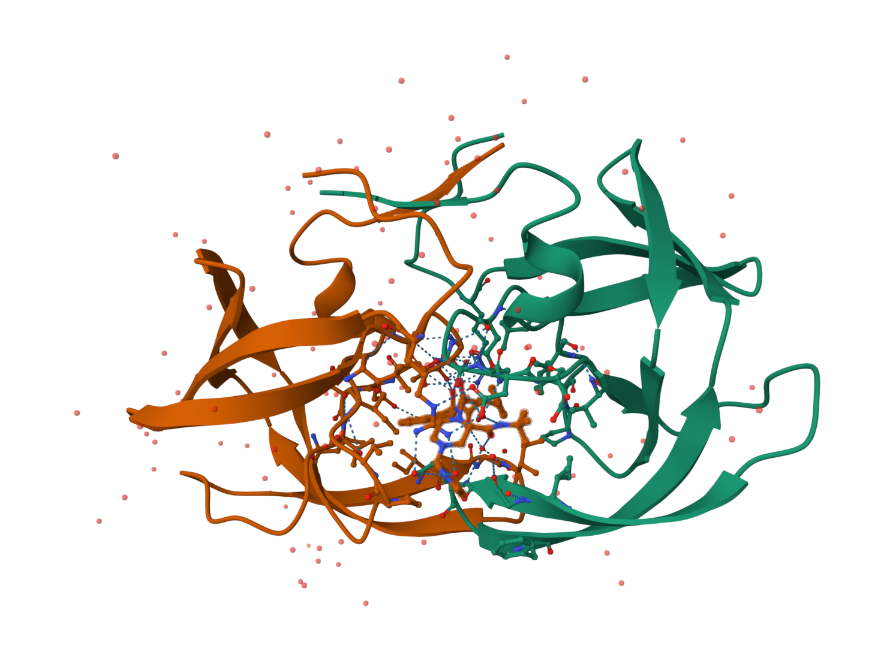

1: Introduction to the RCSB Protein Data Bank (PDB)
The PDB archive is the major repository of information about the 3D structures of large biological molecules, including proteins and nucleic acids. Understanding the shape of these molecules helps to understand how they work. This knowledge can be used to help deduce a structure’s role in human health and disease, and in drug development. The structures in the PDB range from tiny proteins and bits of DNA or RNA to complex molecular machines like the ribosome composed of many chains of protein and RNA.
In the first section of this lab we will interact with the main US based PDB website (note there are also sites in Europe and Japan).
Visit: http://www.rcsb.org/ and answer the following questions
NOTE: The “Analyze” > “PDB Statistics” > “by Experimental Method and Molecular Type” on the PDB home page should allow you to determine most of these answers.
PDB statistics
Open RStudio and begin a new class09 project. If we have covered GitHub in a previous class then you should create this within your GitHub tacked directory/folder from that class. Make sure “Create a git repository” option is NOT ticked. This is because we want to use the same git repository as we used last day and not start a new one - if you are not sure what this means ask Barry now!
Next, open a new Quarto document (File > New File > Quarto Document…). As always, we will aim to have a rendered PDF report with working code by the end of this class!
Download a CSV file from the PDB site (accessible from “Analyze” > “PDB Statistics” > “by Experimental Method and Molecular Type”. Move this CSV file into your RStudio project and use it to answer the following questions:
X.ray EM NMR Multiple.methods Neutron Other
Protein (only) 158844 11759 12296 197 73 32
Protein/Oligosaccharide 9260 2054 34 8 1 0
Protein/NA 8307 3667 284 7 0 0
Nucleic acid (only) 2730 113 1467 13 3 1
Other 164 9 32 0 0 0
Oligosaccharide (only) 11 0 6 1 0 4
Total
Protein (only) 183201
Protein/Oligosaccharide 11357
Protein/NA 12265
Nucleic acid (only) 4327
Other 205
Oligosaccharide (only) 22
Q1: What percentage of structures in the PDB are solved by X-Ray and Electron Microscopy.
sums <-apply(csv, 2, sum)print(paste0("Percentage of structures solved by X-ray: ",sums["X.ray"] *100/ sums["Total"], "%"))
[1] "Percentage of structures solved by X-ray: 84.8323138278999%"
print(paste0("Percentage of structures solved by EM: ",sums["EM"] *100/ sums["Total"], "%"))
[1] "Percentage of structures solved by EM: 8.32730145663909%"
Q2: What proportion of structures in the PDB are protein?
print(paste0("Proportion of structures that are proteins: ", csv["Protein (only)", "Total"] *100/ sums["Total"], "%"))
[1] "Proportion of structures that are proteins: 86.6702621382648%"
Q3: Type HIV in the PDB website search box on the home page and determine how many HIV-1 protease structures are in the current PDB? *7,434
Using Mol.* to examine HIV-Pr
hERE IS A RUBISH PIC OF hiv-pR that is not very useful yet.

The PDB format
Now download the “PDB File” for the HIV-1 protease structure with the PDB identifier 1HSG. On the website you can “Display” the contents of this “PDB format” file.
Alternatively, you can examine the contents of your downloaded file in a suitable text editor or use the Terminal tab from within RStudio (or your favorite Terminal/Shell) and try the following command:
#less ~/Downloads/1hsg.pdb ## (use ‘q’ to quit)
NOTE: When viewing the file stop when you come the lines beginning with the word “ATOM”. We will discuss this ubiquitous PDB file format when you have got this far.
Protein Data Bank files (or PDB files) are the most common format for the distribution and storage of high-resolution biomolecular coordinate data. At their most basic, PDB coordinate files contain a list of all the atoms of one or more molecular structures. Each atom position is defined by its x, y, z coordinates in a conventional orthogonal coordinate system. Additional data, including listings of observed secondary structure elements, are also commonly (but not always) detailed in PDB files.
Molecular graphics programs such as Mol*, VMD, PyMol and Chimera take these files and plot them in 3D with the ability to make simplified and stylized representations such as the one shown below:
Figure 1. HIV-1 protease structure (PDB code: 1HSG) in complex with the small molecule indinavir.
2. Visualizing the HIV-1 protease structure.
The HIV-1 protease is an enzyme that is vital for the replication of HIV. It cleaves newly formed polypeptide chains at appropriate locations so that they form functional proteins. Hence, drugs that target this protein could be vital for suppressing viral replication. A handful of drugs - called HIV-1 protease inhibitors (saquinavir, ritonavir, indinavir, nelfinavir, etc.) - are currently commercially available that inhibit the function of this protein, by binding in the catalytic site that typically binds the polypeptide.
In this section we will use the 2Å resolution X-ray crystal structure of HIV-1 protease with a bound drug molecule indinavir (PDB ID: 1HSG). We will use the Mol* molecular viewer to visually inspect the protein, the binding site and the drug molecule. After exploring features of the complex we will move on to perform bioinformatics analysis of single and multiple crystallographic stuctures to explore the conformational dynamics and flexibility of the protein - important for it’s function and for considering during drug design.
Using Mol Mol (pronounced “molstar”) is a new web-based molecular viewer that is rapidly gaining in popularity and utility. At the time of writing it is still a long way from having the full feature set of stand-alone molecular viewer programs like VMD, PyMol or Chimera. However, it is gaining new features all the time and does not require any download or complicated installation.
You can use Mol* directly at the PDB website (as well as UniProt and elsewhere). However, for the latest and greatest version we will visit the Mol* homepage at: https://molstar.org/viewer/.
To load a structure from the PDB we can enter the PDB code and click “Apply” in the “Download Structure” menu (see figure below)